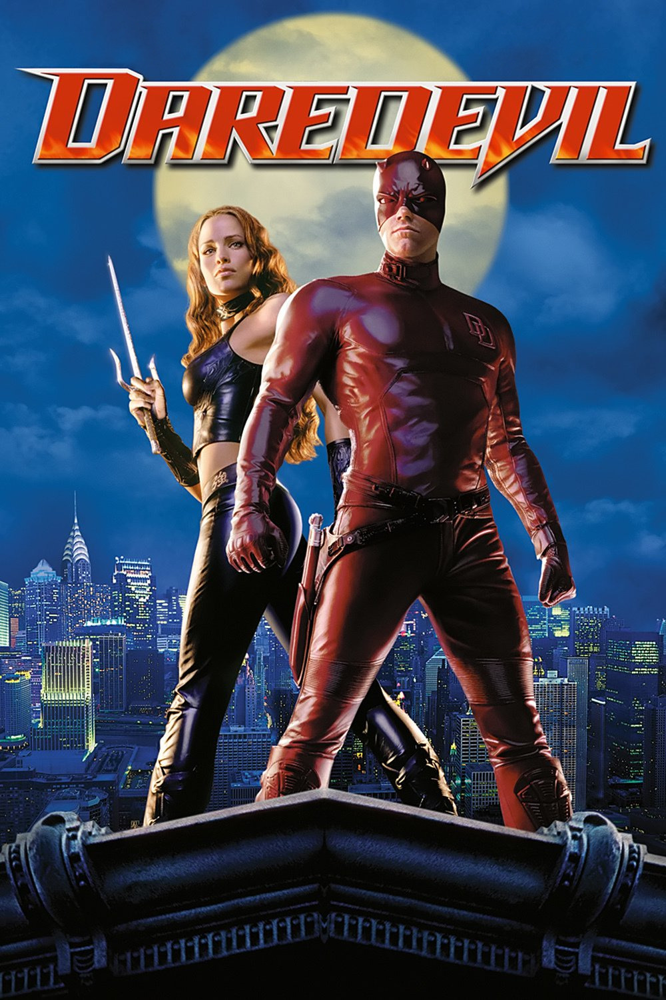

Мировая премьера: 14 февраля 2003
Слоган: Человек, не знающий страха.
Сюжет: Днём слепой адвокат Мэтт Мёрдок защищает невиновных в зале суда. Ночью он превращается в Сорвиголову – бесстрашного мстителя в маске, который восстанавливает справедливость на улицах Нью-Йорка благодаря "чувству радара", позволяющему ему "видеть" со сверхчеловеческой точностью. Когда возлюбленная Мэтта, красавица Электра Начиос, оказывается в смертельной опасности, Сорвиголове приходится вступить в схватку с безжалостным Королём мафии и его лучшим киллером Меченым.
Режиссёр: Марк Стивен Джонсон
В основе: Комиксы о Сорвиголове (США, выходят с 1964, издательство "Марвел Комикс")
Серия: Сорвиголова
В ролях: Бен Аффлек, Дженнифер Гарнер, Джон Фавро
| Бен Аффлек | Мэтт Мёрдок / Сорвиголова |
| Дженнифер Гарнер | Электра Начиос |
| Джон Фавро | Франклин Нелсон |
| Колин Фаррелл | Лестер Пойндекстер / Меченый |
| Майкл Кларк Данкан | Уилсон Фиск / Король Мафии |
| Джо Пантолиано | Бен Эрик |
| Дэвид Кит | Джек "Дьявол" Мёрдок |
| Скотт Терра | Юный Мэтт |
| Эрик Авари | Николас Начиос |
| Деррик О'Коннор | Отец Эверетт |
| Ленни Лофтин | Детектив Ник Манолис |
| Лиленд Орсер | Уэсли Уэлч |
| Пол Бен-Виктор | Хосе Кесада |
| Кевин Смит | Джек Кирби |
Бюджет: $ 78 млн.
Кассовые сборы в США: $ 103 млн.
Кассовые сборы в мире: $ 179 млн.
Продолжительность: 1 ч. 36 мин.
Рейтинг: 5.3